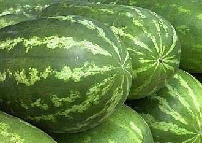

A görögdinnye (Citrullus lanatus) a tökfélék vagy más néven kabakosok (Cucurbitaceae) családjába tartozó, Afrika déli részéről származó növényfaj, illetve annak termésének a neve. Sokan gyümölcsnek tartják, de termesztéstechnikailag zöldségnek számít
Főgyökere a sárgadinnyéénél erőteljesebb és mélyebbre hatol, de nagy része még így is a talaj felső 20–25 cm-ében marad. Hajtásrendszere a növekedési típustól függően változó. Megkülönböztetünk hosszú, közepes és rövid hajtású csoportokat. A hajtást 1 m-ig rövidnek, 1,1–1,5 m között közepesnek, 1,5-től 2,0 m-ig nagynak, 2 m felett igen nagynak mondjuk. Egy-egy növény 3–7 hajtást növeszthet.